Ce projet prédit la consommation électrique horaire de la zone PJME (PJM East) à partir de l’historique récent et de variables calendaires. L’entrée du modèle est une fenêtre de 168 heures ; la sortie est un vecteur de 24 valeurs (les 24 prochaines heures de charge).
Trois architectures sont comparées : LSTM, Bi-LSTM et LSTM avec attention additive (Bahdanau). Les métriques finales sont calculées sur le jeu de test uniquement (2016-12-05 05:00:00 → 2018-08-03 00:00:00), après dénormalisation en mégawatts (MW).
PJME_hourly.csv (Kaggle PJM Hourly Energy Consumption).dow, hour, is_holiday, is_weekend, month + cible PJME_MW.| Paramètre | Valeur |
|---|---|
| hidden_size | 64 |
| num_layers | 2 |
| dropout | 0.2 |
| attn_dim (attention) | 64 |
| input_dim | 6 |
| Entraînement | Valeur |
|---|---|
| batch_size | 64 |
| learning rate (Adam) | 0.001 |
| max_epochs | 100 |
| early stopping (patience) | 10 |
| device | cpu |
| seed | 42 |
Loss : MSE sur les 24 pas de sortie (charge normalisée pendant l’entraînement).
Meilleur modèle sur ce run (MAE la plus faible) : lstm.
| Modèle | MAE (MW) | RMSE (MW) | MAPE (%) |
|---|---|---|---|
| lstm | 1417.2 | 1981.7 | 4.50 |
| bilstm | 1423.8 | 1998.7 | 4.51 |
| lstm_attention | 1457.4 | 2020.4 | 4.61 |
| lstm | 4554.4 | 6025.2 | 14.41 |
| lstm | 4554.4 | 6025.2 | 14.41 |
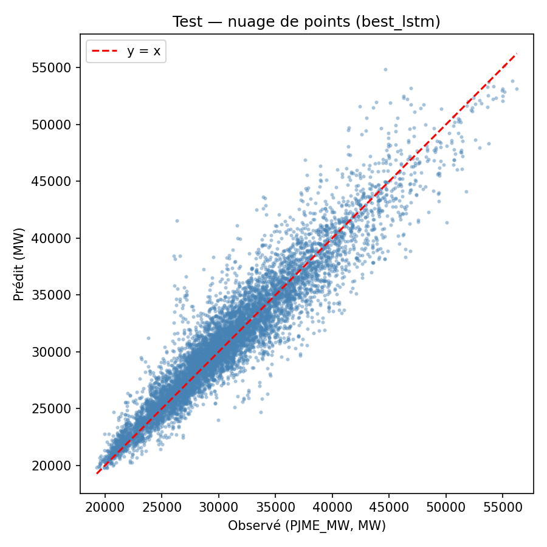
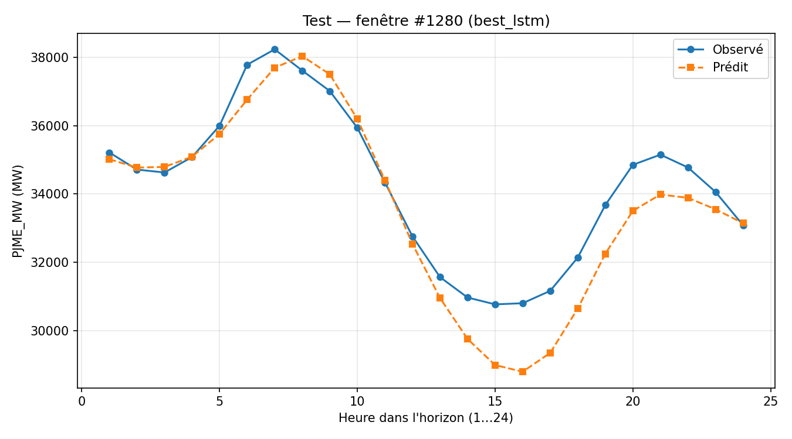
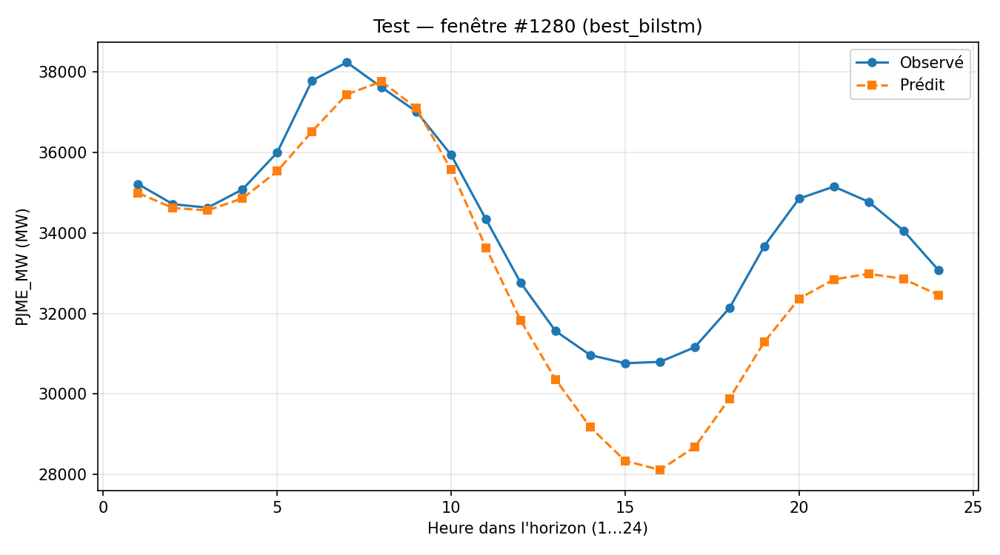
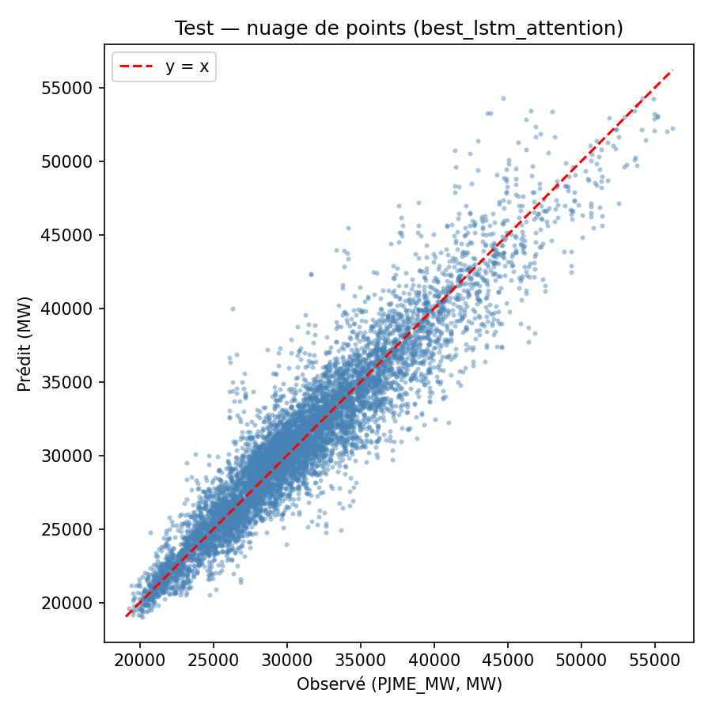
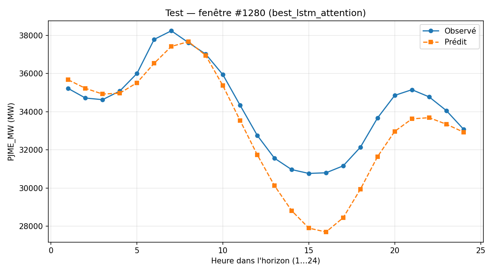
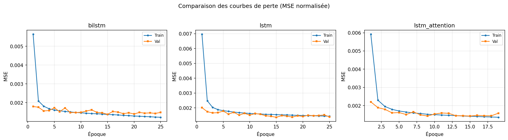
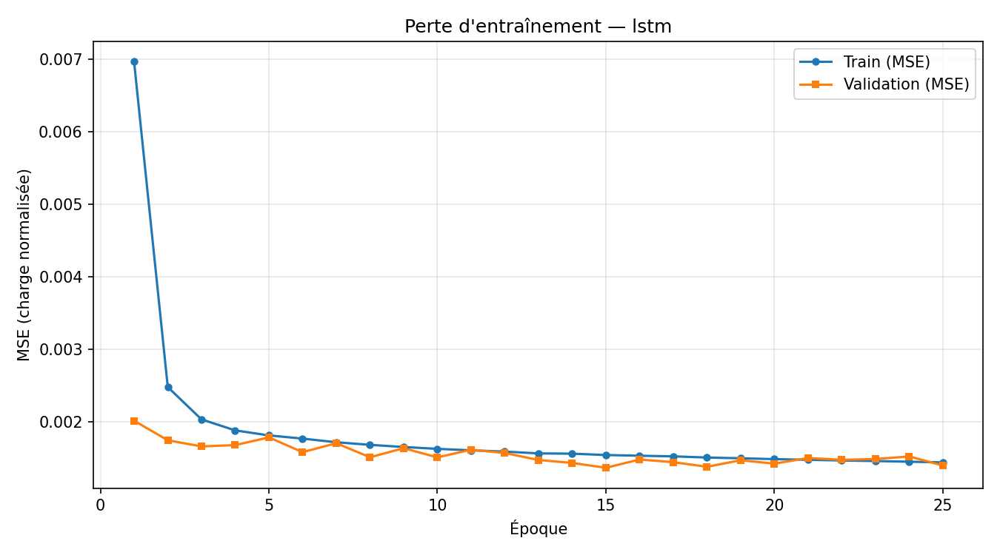
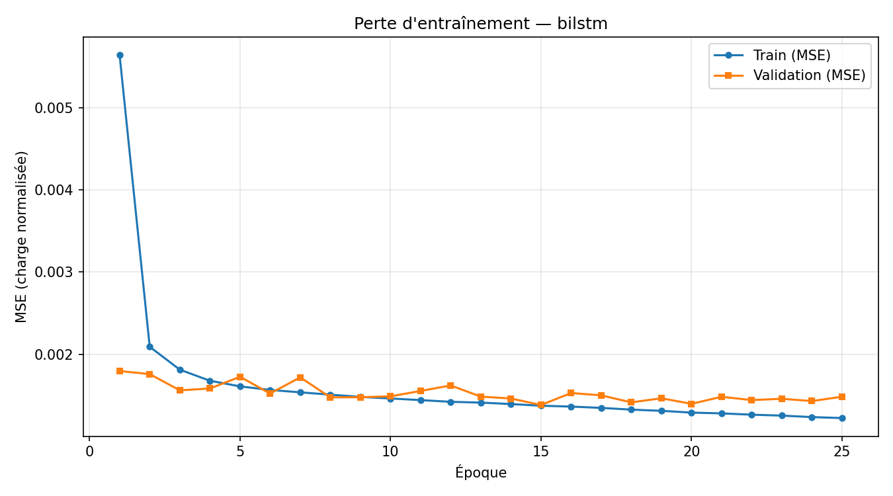
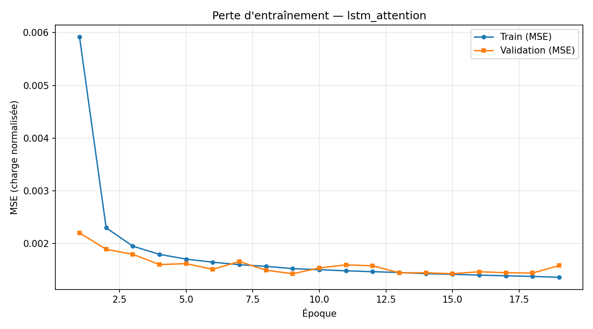
Comparaison des pertes au niveau de chaque point prédit (test, MW).
d = L(a) − L(b) ; p < 0,05 : différence significative à 5 %.
| Modèle A | Modèle B | Loss | DM | p-valeur | Sig. 5 % |
|---|---|---|---|---|---|
| lstm | bilstm | mse | -3.2853 | 0.0010 | oui |
| lstm | lstm_attention | mse | -5.4620 | 0.0000 | oui |
| bilstm | lstm_attention | mse | -2.9397 | 0.0033 | oui |
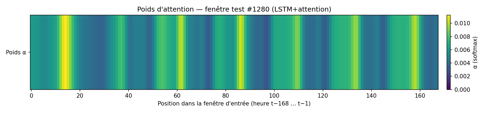
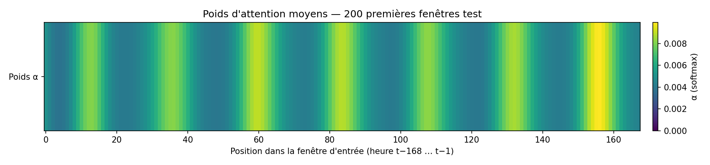
Les trois modèles obtiennent des erreurs du même ordre de grandeur sur le test. Le lstm affiche légèrement les meilleures métriques dans cette configuration (hidden_size=64, pas de recherche systématique d’hyperparamètres).
Les tests DM indiquent si les écarts de performance entre paires de modèles sont statistiquement distinguables au seuil de 5 %, au-delà de la seule comparaison des moyennes (MAE/RMSE).
python energy_forecast/src/preprocessing.py --all python energy_forecast/src/train.py --config energy_forecast/config.yaml python energy_forecast/src/evaluate.py --config energy_forecast/config.yaml python energy_forecast/src/plot_training_history.py --config energy_forecast/config.yaml python energy_forecast/src/diebold_mariano.py --config energy_forecast/config.yaml python energy_forecast/src/plot_attention_heatmap.py --config energy_forecast/config.yaml python energy_forecast/src/generate_report.py --config energy_forecast/config.yaml